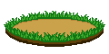

???
PomoMons is a free Pomodoro timer with a creature collector attached. Start a focus session, work until it ends, and a wild Pomomon turns up. Throw a tomato, catch it, and the mon joins your Pomodex.
No account. No download. No ads, no paid tier. Works offline after one load.
30 mon forms across 16 species, numbered #1 to #30 in the Pomodex. Fourteen of them are evolutions, which happen on their own at level 16, 20 or 36 depending on the line.
Evolved forms also turn up in the wild once you are high enough level to meet them, so you can catch one outright instead of raising it. Base forms keep appearing too, so the pool grows as you level instead of leaving old forms behind.
Every mon is food. Tomotot is a tomato that becomes Marinaro and then Strangletti; Chilino is a chilli that ends up a ghost pepper. Five flavour types: Savory, Sweet, Spicy, Sour and Bitter.
Two rare variants show up on any encounter. A shiny is gold and sparkling, about 1 in 500. A dark is near-black, about 1 in 100. Shiny rolls first and wins, so no mon is ever both. See every mon and its evolution level.
Fixed, timed blocks are the best-tested way to work. In a trial of 87 students, the group on a set schedule finished the same amount of work in less time, with less fatigue and better concentration, than the group taking breaks whenever they felt like it. No study shows a timer makes you learn more, though, and finishing a session on a plain timer gives you nothing back but silence.
The game is the half with the better evidence. Four separate meta-analyses have found that game elements improve learning outcomes, with effect sizes rated medium to large. That is a stronger result than the timer itself can claim. The nine studies, including the two that disagree with us.
A mon takes about ten seconds and arrives where you were going to stop anyway. It will not fix a task you are avoiding for a real reason, and if timers have never worked for you, this will not change that. What it does is make the fourth session of the afternoon easier to start than the fourth session of a plain timer.
Your level, sessions and collection save in your own browser, on your own device, with nothing uploaded and no account behind any of it. The site counts anonymous page views and sets no tracking cookies.
The catch: browser storage belongs to the browser. Clear your site data, switch browsers or use a private window, and the collection goes with it. A save code, copied or emailed to yourself, restores it anywhere. That is the only thing an email address is used for, and nothing here needs one.
PomoMons installs like an app. Your browser can add it to your home screen or desktop and open it with no address bar. After one load the timer, the encounters and your collection all work with no connection.
Nearly every focus app with a reward loop is a phone app. Forest, Flora, Study Bunny, Focus Plant and Focus Friend all are. If you work at a computer, the thing tracking whether you are focused is on the wrong device.
PomoMons runs in a tab you already have open. The mons are original rather than borrowed, and nothing sits behind a login or a payment.